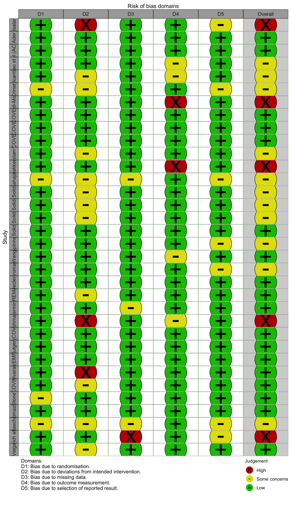

install.packages(c("readxl", "robvis"))Chapter 3 — Validity control and quality assessment of real-world data and real-world evidence
Required packages
Install the following packages before running the example.
library(readxl)
library(robvis)The quality of real-world data is often suboptimal and can therefore lead to bias when generating real-world evidence (RWE). In this chapter, we will introduce key quality concerns of RWD, including their accuracy, completeness, and timeliness. Subsequently, we will discuss which steps can be taken to assess the quality of RWD, and determine their fitness for use. The chapter will also introduce directed acyclic graphs to explain how the analysis of RWD may be affected by different types of bias. We will put particular focus on confounding bias, selection bias, and information bias, and explain how these biases can be addressed by referring to specific chapters from the book. Finally, the chapter presents common quality appraisal tools that can be used to assess the quality of real-world evidence (for instance when conducting a systematic review).
Example code
A risk of bias assessment was conducted in the COVID-NMA review. We can create a summary table of risk of bias assessment and produce a traffic light plot as follows:
Risk_of_Bias <- read_excel("resources/RoB-covid.xlsx")
#creation of traffic light plot
trafficlight_rob <- rob_traffic_light(data = Risk_of_Bias, tool = "ROB2")
trafficlight_robWarning in ggplot2::geom_point(shape = 1, colour = "black", size = psize, : All aesthetics have length 1, but the data has 204 rows.
ℹ Please consider using `annotate()` or provide this layer with data containing
a single row.
Version info
This chapter was rendered using the following version of R and its packages:
R version 4.5.1 (2025-06-13)
Platform: aarch64-apple-darwin20
Running under: macOS Sequoia 15.5
Matrix products: default
BLAS: /Library/Frameworks/R.framework/Versions/4.5-arm64/Resources/lib/libRblas.0.dylib
LAPACK: /Library/Frameworks/R.framework/Versions/4.5-arm64/Resources/lib/libRlapack.dylib; LAPACK version 3.12.1
locale:
[1] en_US.UTF-8/en_US.UTF-8/en_US.UTF-8/C/en_US.UTF-8/en_US.UTF-8
time zone: Asia/Jakarta
tzcode source: internal
attached base packages:
[1] stats graphics grDevices utils datasets methods base
other attached packages:
[1] robvis_0.3.1 readxl_1.4.5
loaded via a namespace (and not attached):
[1] vctrs_0.7.3 cli_3.6.5 knitr_1.50 rlang_1.3.0
[5] xfun_0.62 purrr_1.2.2 generics_0.1.4 S7_0.2.0
[9] jsonlite_2.0.0 glue_1.8.0 htmltools_0.5.8.1 scales_1.4.0
[13] rmarkdown_2.29 grid_4.5.1 cellranger_1.1.0 evaluate_1.0.4
[17] tibble_3.3.0 fastmap_1.2.0 yaml_2.3.10 lifecycle_1.0.4
[21] compiler_4.5.1 dplyr_1.1.4 RColorBrewer_1.1-3 htmlwidgets_1.6.4
[25] pkgconfig_2.0.3 tidyr_1.3.1 rstudioapi_0.17.1 farver_2.1.2
[29] digest_0.6.37 R6_2.6.1 tidyselect_1.2.1 pillar_1.11.0
[33] magrittr_2.0.3 gtable_0.3.6 withr_3.0.2 tools_4.5.1
[37] ggplot2_4.0.3